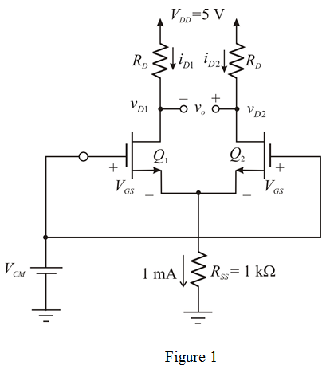

Write the formula for overdrive voltage.
Substitute for and  for
for  in the equation.
in the equation.
Therefore, the overdrive voltage  is .
is .
(a)
Refer to the circuit diagram in Figure P8.29 in the textbook.
Draw the DC bias circuit diagram for the figure.

Apply Kirchhoff’s voltage law to the circuit diagram.
…… (1)
Write the formula for overdrive voltage.
Substitute for and for in the equation.
Therefore, the overdrive voltage is .
The gate-to-source voltage is,
Substitute for  and for
and for  .
.
Therefore, the gate-to-source voltage  is .
is .
Recall equation (1).
Substitute for  .
.
Therefore, the value of is .
The differential gain is,
Substitute for  in the equation.
in the equation.
Substitute for  ,
, for
for  and
and  for
for  .
.
Solve for  .
.
Therefore, the drain resistance  is .
is .
(c)
The drain voltage of transistor  is,
is,
Substitute 5 for  , for
, for  and for
and for  .
.
Therefore, the drain voltage of transistor  is
is  .
.
The drain voltage for  is
is
Substitute 5 for  ,
,  for
for  and
and  for .
for .
Therefore, the drain voltage  of transistor
of transistor  is .
is .
(d)
The common mode gain is,
Substitute for ,  for
for  , for
, for  and for
and for  .
.
Thus, the common mode gain  is .
is .
In triode region, the continuous channel obtained by
Therefore, the change in  is .
is .